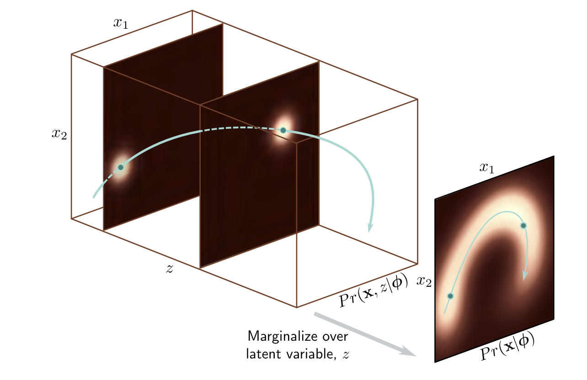
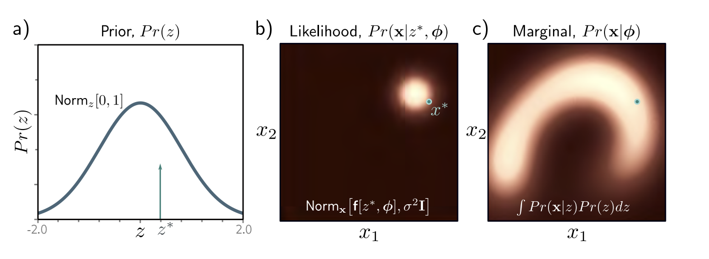
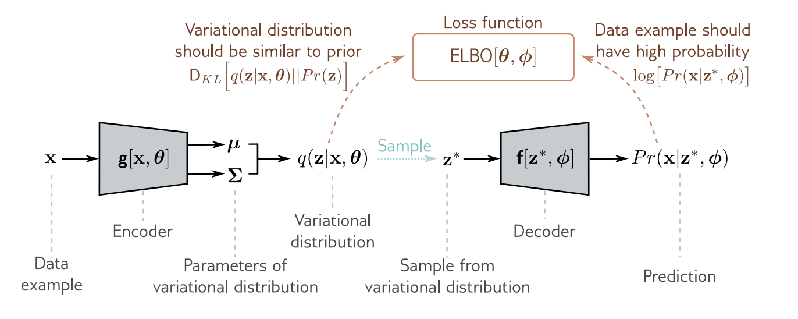
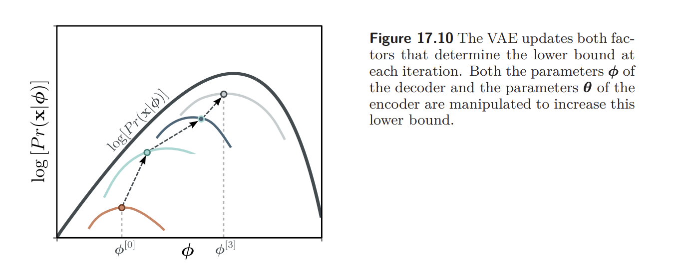

C17.Variational AutoEncoders
发布于 2025年7月21日 | 分类: 深度学习
← 上一篇 C16.Normalizing flow 15 / 18 下一篇 → C18.Diffusion models 1.Latent variable
不同于直接对$Pr(\bold x)$建模, 而是对联合概率$Pr(\bold x,\bold z)$建模, 再通过边缘化得到$Pr(x)$:
$$Pr(\bold x)=\int Pr(\bold x, \bold z)dz$$
进一步, 联合概率$Pr(x,z)$也可以通过prior(先验)$Pr(z)$和likelihood(似然)$Pr(x|z)$得到:
$$Pr(x,z)=Pr(x|z)Pr(z)$$
虽然显得很不直接(有点像贝叶斯网), 但意义在于复杂的分布$Pr(x)$可以由两个相对简单的分布表示.
e.g. 1D高斯混合
假设z为离散值, 有如下:
$$\begin{aligned}
Pr(z=n)=\lambda_n, &\sum \lambda_n=1\\
Pr(x|z=n)=\mathcal N_x(\mu_n, \sigma^2)
\end{aligned}$$
则可得:
$$\begin{aligned}
Pr(x)&=\sum Pr(x,z=n)\\
&=\sum Pr(x|z=n)Pr(z=n)\\
&=\sum \lambda_n \mathcal N_x(\mu_n, \sigma^2_n)
\end{aligned}$$
1.1. non-linear latent variable
设$z$服从一个多维的单位高斯分布:
$$Pr(\bold z)=\mathcal N_\bold z[\bold 0, \bold I]$$
而似然$Pr(x| z,\phi)$也服从一个多维高斯:
$$Pr(x|z, \phi) =\mathcal N_\bold x[f[\bold z,\boldsymbol \phi], \sigma^2\bold I]$$
这个多维高斯的均值由一个网络$f(\bold z, \phi)$决定, 而协方差$\sigma^2\bold I$的模样让分布呈现球形向外扩散的模样.
立得:
$$\begin{aligned}
Pr(x|\phi)&=\int Pr(x,z|\phi)dz \\
&=\int Pr(x|z,\phi)Pr(z) dz\\
&=\int \mathcal N_\bold x[f[\bold z,\boldsymbol \phi], \sigma^2\bold I] \cdot \mathcal N_\bold z[\bold 0, \bold I] dz
\end{aligned}$$
e.g. 当$z\in\R, \bold x\in\R^2$:

沿z方向的加权积分求和得到边缘分布$Pr(x|\phi)$
1.2. Generation
进行2次采样即可生成新样本, 先从已知分布$Pr(z)$采样出$z^*$, 再代入$Pr(x|z^*,\phi)$进行采样得到$x^*$:

2.Training
得定训练集$\{\bold x_i\}_{i=1}^I$, 损失函数为:
$$\hat{\boldsymbol \phi}=\arg\max_{\phi}[\sum_{i=1}^I \log(Pr(x_i|\phi))]$$
其中:
$$Pr(x_i|\phi) = \int \mathcal N_\bold x[f[\bold z,\boldsymbol \phi], \sigma^2\bold I] \cdot \mathcal N_\bold z[\bold 0, \bold I] dz$$
问题 积分符号使得向后传播困难.
2.1.Evidence lower bound(ELOB)
对于一个给定的$\phi$, 我们使用一个函数近似他的对数似然函数, 使得这个函数永远小于等于他的对数似然函数.
2.2.Jensen‘s inequality
Thm 对于任意一个concave function(凹函数, 往上凸起的函数)$g[•]$ 和一个任意分布$Pr(y)$, 有:
$$g[\mathbb E[y]]\ge \mathbb E[g[y]]$$
cor 易证$\log$是一个凹函数, 立得:
$$\log(\mathbb E[y])\ge \mathbb E[\log(y)]$$
相当于:
$$\log(\int Pr[y]ydy)\ge \int Pr[y] \log(y) dy$$
由于对任意分布$Pr(y)$都成立, 由期望的性质可得:
$$\log(\int Pr[y]h[y]dy)\ge \int Pr[y] \log(h[y]) dy$$
其中, h[y]可以将原分布变为其他分布
2.3.下界推导
先增加一个任意的分布$q(z)$. (q(z)的意义 见本节末尾的总结)
$$\log(\Pr(x|\phi))=\log(\int Pr\left(x,z|\phi\right)dz )\\
=\log(\int q\left(z\right) \frac {Pr\left(x,z|\phi\right)}{q(z)}dz )$$
由上节立得:
$$\log(\int q\left(z\right) \frac {Pr\left(x,z|\phi\right)}{q(z)}dz)\ge \int q\left(z\right) \log(\frac {Pr\left(x,z|\phi\right)}{q(z)}) dz$$
使用参数$\theta$操控分布$q(z)$, 最终得:
$$ELBO[\boldsymbol \theta, \boldsymbol \phi]=\int q\left(\bold z|\boldsymbol \theta \right) \log(\frac {Pr\left(\bold x,\bold z|\boldsymbol \phi\right)}{q(\bold z|\boldsymbol \theta)}) dz$$
2.4.ELBO的另外两个表达
表达1
$$\begin{aligned}
ELBO[\boldsymbol \theta, \boldsymbol \phi]&=\int q\left(\bold z|\boldsymbol \theta \right) \log(\frac {Pr\left(\bold x,\bold z|\boldsymbol \phi\right)}{q(\bold z|\boldsymbol \theta)}) dz\\
&=\int q\left(\bold z|\boldsymbol \theta \right) \log(\frac {Pr\left(\bold z|\bold x,\boldsymbol \phi\right)Pr\left(\bold x|\boldsymbol \phi\right)}{q(\bold z|\boldsymbol \theta)}) dz\\
&=\int q\left(\bold z|\boldsymbol \theta \right)\log(Pr\left(\bold x|\boldsymbol \phi\right))dz+ \int q\left(\bold z|\boldsymbol \theta \right) \log(\frac {Pr\left(\bold z|\bold x,\boldsymbol \phi\right)}{q(\bold z|\boldsymbol \theta)}) dz\\
&=\log(Pr\left(\bold x|\boldsymbol \phi\right))+\int q\left(\bold z|\boldsymbol \theta \right) \log(\frac {Pr\left(\bold z|\bold x,\boldsymbol \phi\right)}{q(\bold z|\boldsymbol \theta)}) dz\\
&=\log(Pr\left(\bold x|\boldsymbol \phi\right)) - D_{KL} \left[
q\left(\bold z|\boldsymbol \theta \right) \left\| Pr\left(\bold z|\bold x,\boldsymbol \phi\right) \right. \right]\\
\end{aligned}$$
表达2
$$\begin{aligned}
ELBO[\boldsymbol \theta, \boldsymbol \phi]&=\int q\left(\bold z|\boldsymbol \theta \right) \log(\frac {Pr\left(\bold x,\bold z|\boldsymbol \phi\right)}{q(\bold z|\boldsymbol \theta)}) dz\\
&=\int q\left(\bold z|\boldsymbol \theta \right) \log(\frac {Pr\left(\bold x|\bold z,\boldsymbol \phi\right)Pr\left(\bold z|\boldsymbol \phi\right)}{q(\bold z|\boldsymbol \theta)}) dz\\
&=\int q\left(\bold z|\boldsymbol \theta \right)\log(Pr\left(\bold x|\bold z,\boldsymbol \phi\right))dz+ \int q\left(\bold z|\boldsymbol \theta \right) \log(\frac {Pr\left(\bold z\right)}{q(\bold z|\boldsymbol \theta)}) dz\\
&=\int q\left(\bold z|\boldsymbol \theta \right)\log(Pr\left(\bold x|\bold z,\boldsymbol \phi\right))dz - D_{KL}[ q\left(\bold z|\boldsymbol \theta \right) \| Pr\left(\bold z\right) ]\\
\end{aligned}$$
2.5.Variational approximation
使用上节表达式1 , 为了使得近似更加紧凑, 即$q(\bold z|\theta)$更加接近$Pr(\bold z|\bold x,\phi)$, 首先考虑直接求出$Pr(\bold z|\bold x,\phi)$, 通过贝叶斯法则, 有:
$$Pr(\bold z|\bold x,\boldsymbol \phi)=\frac{Pr(\bold x|\bold z,\boldsymbol \phi)Pr(\bold z)}{Pr(\bold x|\boldsymbol \phi)}$$
而$Pr(x|\phi)$是无法知道的, 所以这里通过一个简单方法近似$Pr(z|x,\phi)$:
$$q(z|x,\theta)=\mathcal N_\bold z[g_\mu[x, \theta],g_\Sigma[x,\theta] ]$$
其中, $g(x,\theta)$是一个双层神经网络用于估计正态分布的两个参数$\mu, \Sigma$.
此方法如果遇到复杂的分布, 不可避免的会产生较大的误差.
2.6.Variational auto encoder
再使用上节表达式2 以及上节对$q(z|\theta)$对近似, 得: (q(z)的意义 见本节末尾的总结)
$$ELBO[\theta, \phi]=\int q\left(\bold z|\bold x,\boldsymbol \theta \right)\log(Pr\left(\bold x|\bold z,\boldsymbol \phi\right))d\bold z - D_{KL}[ q\left(\bold z|\bold x , \boldsymbol \theta \right) \| Pr\left(\bold z\right) ]\\$$
其中, 第一项虽然是积分, 但是是一种期望的形式, 可以通过Monte Carlo estimate 进行估计:
$$\mathbb E_\bold z[a[\bold z]] = \int a[\bold z]q\left(\bold z|\bold x,\boldsymbol \theta \right) d\bold z \approx \frac1N \sum_{n=1}^N a[\bold z_n^*]$$
其中, $\bold z_n^*$是对概率分布$q(z|x,\theta)$的取样.
在每次estimate只进行一次取样, 则有:
$$ELBO[\theta, \phi] \approx \log(Pr(x|z^*, \phi))-D_{KL}[q(z|x,\theta)\| Pr(z)]$$
已知$Pr(z)$的分布是$N_z(\bold 0,\bold I)$, 而$q(|)$的分布由上节的近似得$N_z(\mu,\Sigma)$, 则KL divergence 对于两个正态分布有公式, 立得:
$$D_{KL}[q(z|x,\theta)\| Pr(z)]=\frac12(Tr(\Sigma)+\mu\mu^T-D_z-\log(\det[\Sigma]))$$
其中, $D_z=\dim(z)$
2.7.损失函数总结与训练算法
损失函数概括 上述过程十分冗长, 概括起来为:
1.ELOB是loss function的近似, 可以再近似分为两项
2.KL divergence项直接由分布$q(z|x,\theta)$的得到, 而此分布又是$Pr(z|x)$的近似.
3.另一项先由$q(z|x,\theta)$取样, 再将取样代入$Pr(x|z^*,\phi)$, 而此分布是最初始的模型$N(f(z,\phi), \sigma^2I)$.

总的来说, 先根据数据$x$得到降维的latent variable $z$ 的分布, 再根据z尽可能还原x的分布.

问题 采样层如何进行向后传播?
Solution (reparameterization trick) 不直接对分布$q(z|x,\theta)=N(\mu, \Sigma)$进行采样, 而是先对一个标准正太分布采样, 再得到z:
$$z^* = \mu + \Sigma^{1/2}\epsilon^*$$
其中, $\epsilon^*$是对标准正太分布$N(0,I)$的采样.
这样只要记住$\epsilon^*$的值, 就可以向后更新$\mu,\Sigma$了.
分布q的意义 如果上述过程一开始就使用Monte Carlo 估计, 即:
$$\begin{aligned}
Pr(x)&=\int Pr(x,z)dz \\
&=\int Pr(x|z)Pr(z) dz\\
&=\mathbb E_z[Pr(x|z)]\\
&=\mathbb E_z[\mathcal N_x[f[z,\phi], \sigma^2I]]
\end{aligned}$$
再从标准正态分布采样得到$\{z_n\}_{n=1}^N$, 代入得:
$$Pr(x) \approx \frac1N \sum_{n=1}^N Pr(x|z_n)=\frac1N \sum \mathcal N_x[f[z_n,\phi], \sigma^2I]$$
由于$z$的维度也比较高, 大部分$Pr(x|z)$都很小, 直接对z进行取样后代入的大部分值对训练意义不大(梯度消失), 需要巨量的采样, 引入辅助分布$q(z)$后:
$$\begin{aligned}
Pr(x)&=\int Pr(x,z)dz \\
&=\int Pr(x|z)Pr(z) dz\\
&=\int \frac{Pr(x|z)Pr(z)}{q(z)} q(z) dz\\
&=\mathbb E_{q(z)}[\frac{Pr(x|z)Pr(z)}{q(z)}]\\
&\approx \frac1N\sum \frac{Pr(x|z_n)Pr(z_n)}{q(z_n)}
\end{aligned}$$
其中$\{z_n\}$是对辅助分布q采样得到的, 就是希望辅助分布$q(z)$采样而来的z接近$Pr(x|z)$值比较高的地方, 从而使正常数量的采样也能达到足够的训练效果.(注意 , 前几节并不是在这里采样, 而是在上述公式第三行后使用了Jensen‘s inequality, 再在之后的某个地方采样的)
3.Applications
3.1.approximating sample probability(略)
3.2.Generation
直接使用VAE生成的图片质量不高, 关键在于$q(z)$太简单了. 使用更复杂的q可以得到更好的结果.
3.3.Resynthesis(略)
The process of encoding (and possibly modifying) input data before decoding again is known as resynthesis.
利用z做一些事情罢了, 需要训练的数据自带标签z
3.4.Disentanglement
When each dimension represents an independent real-world factor, the latent space is described as disentangled.
在损失函数中加上一些项用于引导Disentanglement:
$$L_{new}=-ELBO[]+\lambda_1E_{Pr(x)}[r_1[q[z|x,\theta]]]+\lambda_2r_2(q(z|\theta))$$
等等.
§Problems
Problem17.4
Show that the ELBO, as expressed in equation 17.18:
$$ELBO[\boldsymbol \theta, \boldsymbol \phi]
=\int q\left(\bold z|\boldsymbol \theta \right)\log(Pr\left(\bold x|\bold z,\boldsymbol \phi\right))dz - D_{KL}[ q\left(\bold z|\boldsymbol \theta \right) \| Pr\left(\bold z\right) ]\\$$
, can alternatively be derived from the KL divergence between the variational distribution $q(z|x)$ and the true posterior distribution $P r(z|x, ϕ)$:
$$D_{KL}[q(z|x)\| Pr(z|x,\phi)]=\int q(z|x)\log(\frac{q(z|x)}{Pr(z|x,\phi)})dz$$
Start by using Bayes’ rule (equation 17.19).
Solution
$$\begin{aligned}
D_{KL}[q(z|x)\| Pr(z|x,\phi)]&=\int q(z|x)\log(\frac{q(z|x)}{Pr(z|x,\phi)})dz\\
&=\int q(z|x)\log(\frac{q(z|x)}{Pr(x|z,\phi)Pr(z)}Pr[x|\phi])dz\\
&=-\int q(z|x)\log(Pr(x|z,\phi))dz +\int q(z|x)\log(\frac{q(z|x)}{Pr(z)}Pr[x|\phi])dz \\
\end{aligned}$$
其中:
$$\int q(z|x)\log(\frac{q(z|x)}{Pr(z)}Pr[x|\phi])dz\le \log \int q(z|x)\frac{q(z|x)}{Pr(z)}Pr[x|\phi]dz$$
$\textcolor{red}{\bold{Answer}}$
$$\begin{aligned}
D_{KL}[q(z|x)\| Pr(z|x,\phi)]&=\int q(z|x)\log(\frac{q(z|x)}{Pr(z|x,\phi)})dz\\
&=\int q(z|x)\log(\frac{q(z|x)}{Pr(x|z,\phi)Pr(z)}Pr[x|\phi])dz\\
&=-\int q(z|x)\log(Pr(x|z,\phi))dz +\int q(z|x)\log(\frac{q(z|x)}{Pr(z)}Pr[x|\phi])dz \\
&=\textcolor{red}{ -E_q[\log(Pr(x|z,\phi))] + \log(Pr(x|\phi))+D_{KL}[q(z|x)\|Pr(z)]}
\end{aligned}$$
又多出了另一个KL divergence, 再进行放缩:
$$E_q[\log(Pr(x|z,\phi))] - D_{KL}[q(z|x)\|Pr(z)] = \log(Pr(x|\phi)) - D_{KL}[q(z|x)\|Pr(z,\phi)]\\
\le \log(Pr(x|\phi))$$
$\textcolor{red}{\bold{Error}}$ ???何意味, 这个放缩可以得到$D_{KL}[q(z|x)\| Pr(z|x,\phi)] \ge 0$, 然后呢?
Problem17.7
Derive the EM algorithm for fitting the 1D mixture of Gaussians model with $N$ components. To do this, you need to (i) find an expression for the posterior distribution $P r(z|x)$ over the latent variable $z ∈ \{1, 2, . . . , N\}$ for a data point $x$ and (ii) find an expression that updates the evidence lower bound given the posterior distributions for all of the data points. You will need to use Lagrange multipliers to ensure that the weights $λ_1, . . . , λ_N$ of the Gaussians sum to one.
Solution omitted 见原书7.4节
← 上一篇 C16.Normalizing flow 15 / 18 下一篇 → C18.Diffusion models ← 返回技术分享